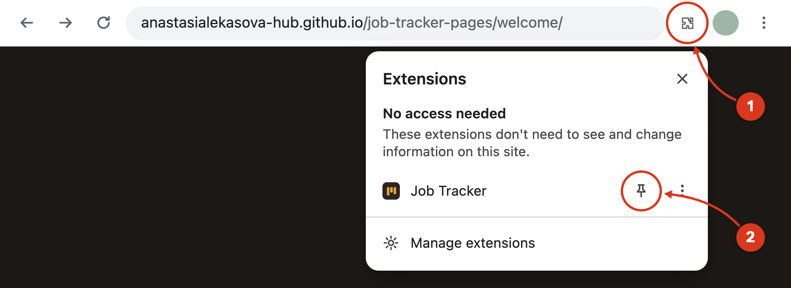
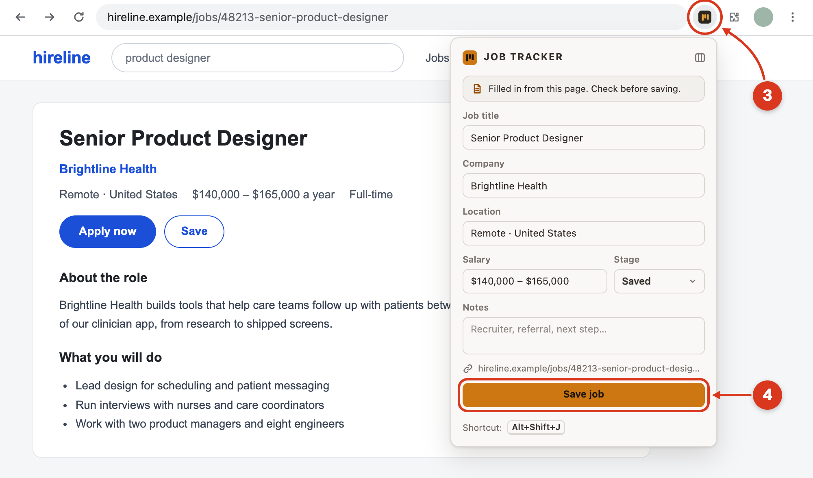
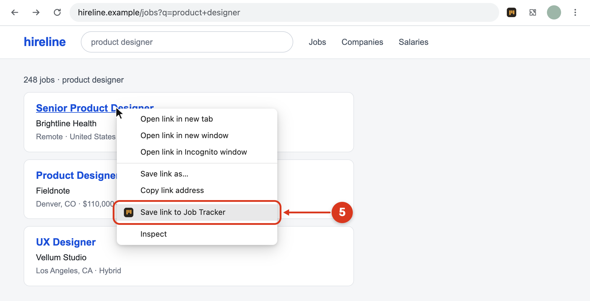

Chrome hides new extensions behind the puzzle icon, so pin Job Tracker first.

Job Tracker fills in what it finds on the page: job title, company, location and salary. Check the fields and click Save job.
The first time you click the icon, you’ll see a short “How it works” screen. Click Got it to open the form.

Choose Save link to Job Tracker. When the job is saved, a check mark briefly appears on the icon.

No account needed. Your jobs are stored only in this browser.